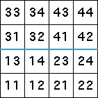

| Let's try to generate the middle line alone by looking at the
length 2 address squares the line occupies. |
|  |
| Immediately we see a complication: the line lies on the boudaries
of length 2 address squares. |
| Suppose the line passes through the squares 13, 14,
23, and 24. The allowed transitions are |
| 3 → 1, 4 → 1, 3 → 2, and 4 → 2 |
| The IFS generates nothing at all. Can you see why by following paths through the graph? |
|
| Perhaps this was a bad choice. So suppose the line passes through the squares
31, 32,
41, and 42. The allowed transitions are |
| 1 → 3, 2 → 3, 1 → 4, and 2 → 4 |
| The IFS generates nothing at all. can you see why by following paths through the graph? |
|
| Several more combinations are possible. For example, we can consider the line as passing through
the squares |
| 13, 14, 41, and
42 |
| or as passing through the squares |
| 13, 32, 23, and
42. |
| Experiment with these combinations and see what pictures are generated. Some give points
belonging to cycles, none gives the line through the middle of the square. |